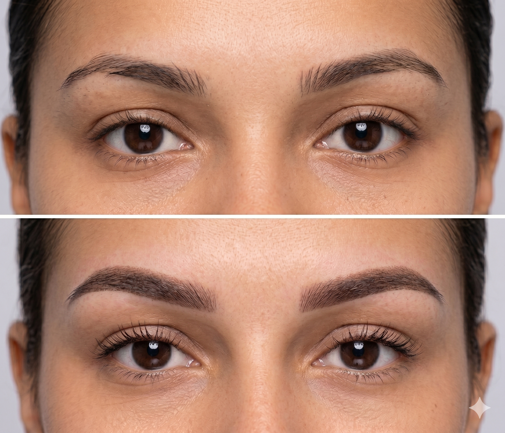

Úprava obočí a řas

Vše, co potřebujete vědět o laminaci a liftingu
Komplexní úprava obočí a řas, zahrnující techniky jako je lash lifting a laminace obočí, je ideální volbou pro ty, kteří hledají výraznou, ale přesto 100% přirozenou změnu bez použití jehel a permanentního pigmentu. Tato procedura vaše vlastní řasy bezpečně natočí od kořínků a obočí zafixuje do plnějšího, úhledného a moderního tvaru.
Jako profesionál vím, že správně upravený rám obličeje dělá divy. K úpravě používám jen ty nejšetrnější produkty, které chloupky nejen tvarují, ale díky obsahu vyživujících látek a keratinu je také posilují. Postarám se o to, abyste odcházeli s rozzářeným pohledem a pocitem naprosté péče.
Co vás čeká během návštěvy:
- Konzultace a analýza: Pečlivě zhodnotím stav vašich řas a obočí a navrhnu nejvhodnější tvar a postup.
- Lifting a fixace: Pomocí šetrných roztoků nadzvednu řasy a zkrotím neposedné chloupky obočí do požadovaného směru.
- Zvýraznění barvou: Pro maximální vizuální efekt chloupky precizně nabarvím odstínem, který k vám perfektně sedne.
- Hloubková výživa: Na závěr aplikuji intenzivní keratinové sérum pro hloubkovou hydrataci, zdraví a lesk chloupků.
Jak dlouho vydrží výsledek a jak o něj pečovat?
Výsledek úpravy, liftingu a laminace vydrží zpravidla 4 až 8 týdnů. Tato doba nezávisí na blednutí barvy, ale je přímo úměrná přirozenému cyklu růstu a vypadávání vašich vlastních řas a chloupků obočí. Jakmile se chloupky přirozeně obmění za nové, efekt postupně odeznívá.
Následná údržba je naprosto minimální. Pouze prvních 24 hodin po proceduře je zásadní vyhnout se kontaktu s vodou, párou, nadměrným pocením a make-upem, aby se tvar mohl správně zafixovat. Poté už můžete žít naprosto bez omezení – plavat, cvičit i používat oblíbenou řasenku pro ještě dramatičtější vzhled.
Na rozdíl od permanentního make-upu se jedná o neinvazivní povrchovou úpravu. Proceduru tak můžeme pravidelně opakovat (ideálně po 6 týdnech), čímž si udržíte neustále upravený a svěží vzhled bez nutnosti ranního zdržování se před zrcadlem.